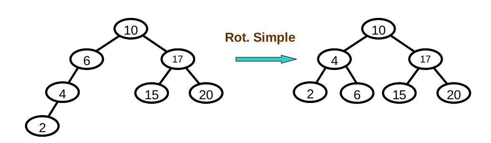

Estructuras de Datos y Algoritmos II
Clase 3
Árboles(2)
versión imprimible o pfdRepaso
Recurrencia, recursión o recursividad es la forma en la cual se especifica un proceso basado en su propia definición.
Recursión
Árbol binario
Es una colección de nodos, tal que:
- puede estar vacía
- o puede estar formada por un nodo (raíz) y otros dos árboles T1 y T2, dónde la raíz de cada árbol Ti está conectado a R por medio de una arista.
Recorridos
- En profundidad (DFS): inorden, preorden, postorden
- Por niveles (BFS)
Árbol binario de búsqueda
2 propiedades:
- Proiedad estructural: binario
- Propiedad de orden: todos los hijos de sub arbol izquierdo tienen valores menores a los de la raíz y todos los hijos del sub arbol derecho tienen valores mayores (o iguales) a los de la raíz
Comparación búsqueda en una lista y en un árbol binario de búsqueda
¿y el peor caso?
Árboles AVL
(Georgii Adelson-Velskii y Yevgeniy Landis)
Es un árbol binario de búsqueda equilibrado.
Para todos sus nodos se cumple que la altura de la rama izquierda no difiere en más de una unidad de la altura de la rama derecha o viceversa.
Definición
Un árbol AVL es un árbol binario tal que:
- Es un árbol vacío
- O, si T es un árbol no vacío y Ti y Td sus subárboles:
- Ti es AVL
- Td es AVL
- |altura(Ti) - altura(Td)| <= 1
NOTA: (un árbol vacío tiene altura -1)
¿ Altura de un árbol ?
¿Cómo hacemos para mantener las alturas de los sub-árboles Equilibradas?
¿Cuándo se "desequilibra" un árbol binario?
Casos de desbalanceo
¿Cómo re-balanceamos?
Rotación
La rotación es una modificación simple de la estructura del árbol, que restaura la propiedad de balanceo, preservando el orden de los elementos
Balanceo
- casos de desbalanceo 1 y 4: rotación simple
- casos de desbalanceo 2 y 3: rotación doble
Rotación simple
Rotación doble

comparación de operaciones en ABB y AVL
- Buscar
- Insertar
- Eliminar
comparación de operaciones en ABB y AVL
Analizando el peor caso respecto de la cantidad de elementos(N)
- ABB: todas las operaciones son lineales.
- AVL: todas las operaciones son log(N).
Árboles Generales
definición
Un árbol es una colección de nodos, tal que:
- puede estar vacía. (Árbol vacío)
- o puede estar formada por un nodo raíz (R) y un conjunto de (sub)árboles T1, T2, ... Tn, k >= 0 dónde la raíz de cada árbol Ti está conectado a R por medio de una arista.
¿Que cambiarían de la implementación de ÁrbolBinario para que sea ArbolGeneral?
Implementaciones
- Lista de hijos
- Hijo izquierdo, Hermano derecho
Recorridos
En profundidad (DFS): inorden, preorden, postorden
por niveles (BFS)
preorden en AB
1. proceso la raiz
2. Si tengo hijo derecho, recorro el subarbol derecho
3. Si tengo hijo izquierdo, recorro el subarbol izquierdo
preorden en AG
1. proceso la raiz
2. para cada árbol hijo
2.1. recorro el hijo
inorder
1. recorro el primer hijo
2. proceso la raiz
3. para cada árbol hijo
3.1. recorro el hijo
¿post orden y por niveles?
...
Fin
¿Preguntas?